K. Chhatre, H. Jeong, Y. Gryaditskaya, C. E. Peters, C.-H. P. Huang, P. Guerrero
D. Lee, C.-H. P. Huang, X. Chen, J. Ye, D. Ceylan, H. Jeong
J. Nam, Y. Hong, C.-H. P. Huang, F. Liu, J. Lee, J. Kim, S. Jin, Y. Lee, J. Jung, S. Choi, S. Kim, Y. Zhou
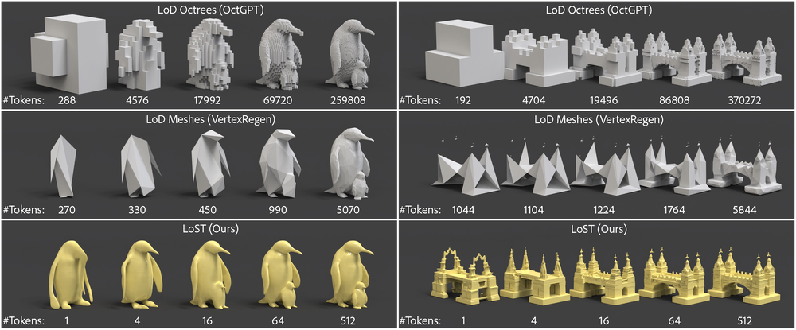
N. Dutt, Z. Shi, P. Guerrero, C.-H. P. Huang, D. Ceylan, N. Mitra, X. Chen
Z. Huang, H. Jeong, X. Chen, Y. Gryaditskaya, T. Wang, J. Lasenby, C.-H. P. Huang
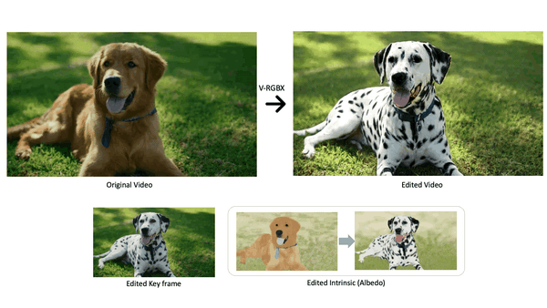
Y. Fang, T. Wu, V. Deschaintre, D. Ceylan, I. Georgiev, C.-H. P. Huang, Y. Hu, X. Chen, T. Wang
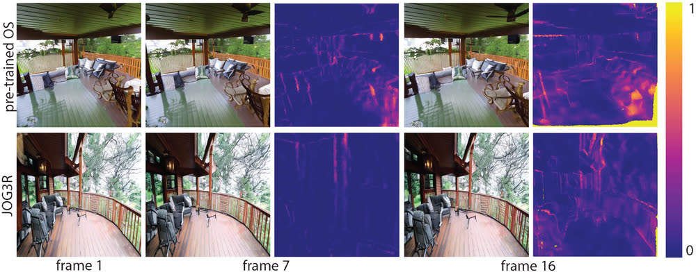
C.-H. P. Huang, N. Mitra, H. Jeong, J. Yoon, D. Ceylan
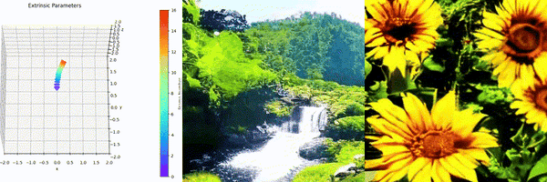
S. Y. Cheong, D. Ceylan, A. Mustafa, A. Gilbert, C.-H. P. Huang
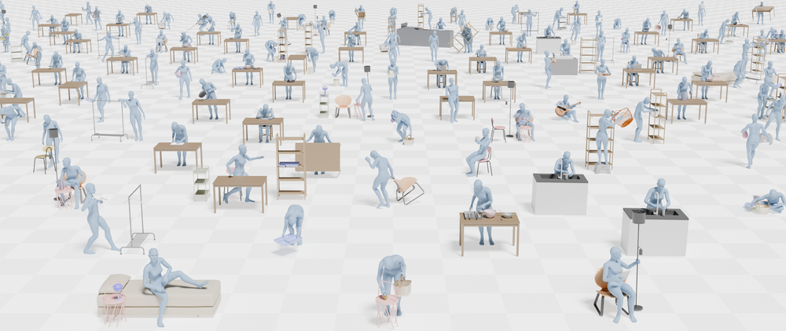
J. Lu, C.-H. P. Huang, U. Bhattacharya, Q. Huang, Y. Zhou
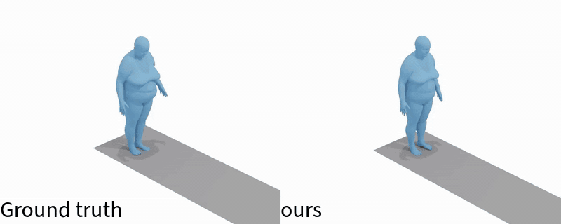
T.-H. Liao, Y. Zhou, Y. Shen, C.-H. P. Huang, S. Mitra, J.-B. Huang, U. Bhattacharya
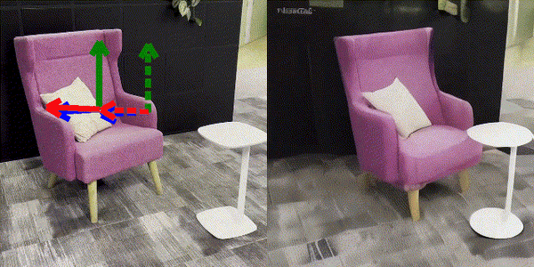
J. Koo, P. Guerrero, C.-H. P. Huang, D. Ceylan, M. Sung
H. Jeong, C.-H. P. Huang, J. C. Ye, N. Mitra, D. Ceylan
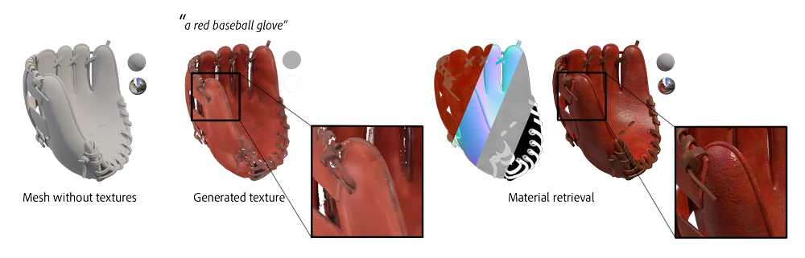
D. Ceylan, V. Deschaintre, T. Groueix, R. Martin, C.-H. P. Huang, R. Rouffet, V. Kim, G. Lassagne
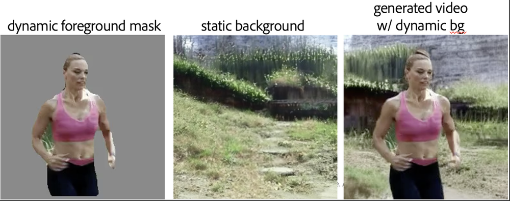
B. Pan, Z. Xu, C.-H. P. Huang, K. K. Singh, Y. Zhou, L. Guibas, J. Yang
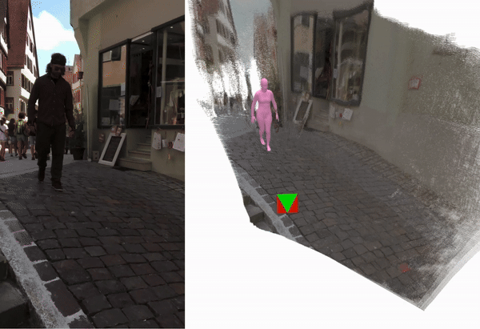
Y. Zhao, T. Y. Wang, B. Raj, M. Xu, Y. Zhou, J. Yang, C.-H. P. Huang
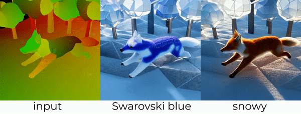
S. Cai, D. Ceylan, M. Gadelha, C.-H. P. Huang, T. Y. Wang, G. Wetzstein
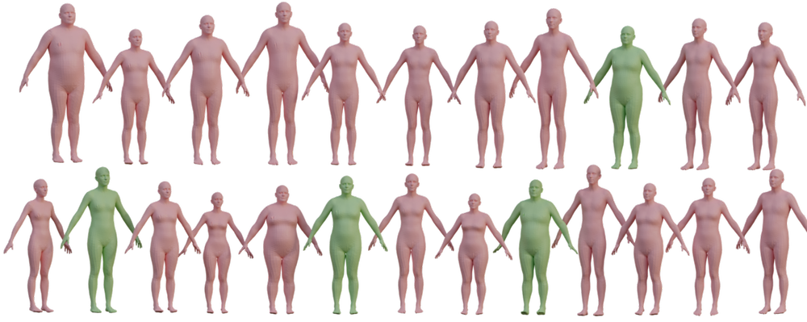
S. Muralikrishnan, C.-H. P. Huang, D. Ceylan, N. Mitra
D. Ceylan*, C.-H. P. Huang*, N. Mitra
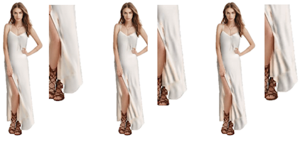
H. Bertiche, N. Mitra, K. Kulkarni, C.-H. P. Huang, T. Y. Wang, M. Madadi, S. Escalera, D. Ceylan
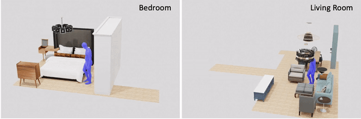
H. Yi, C.-H. P. Huang, S. Tripathi, L. Hering, J. Thies, M. J. Black
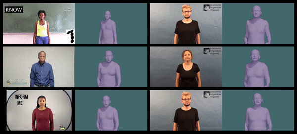
M.-P. Forte, P. Kulits, C.-H. P. Huang, V. Choutas, D. Tzionas, K. J. Kuchenbecker, M. J. Black
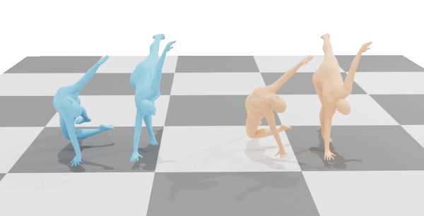
S. Tripathi, L. Müller, C.-H. P. Huang, O. Taheri, M. J. Black, D. Tzionas
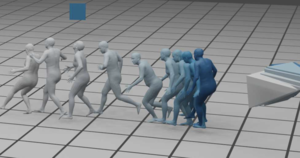
N. Saini, C.-H. P. Huang, M. J. Black, A. Ahmad
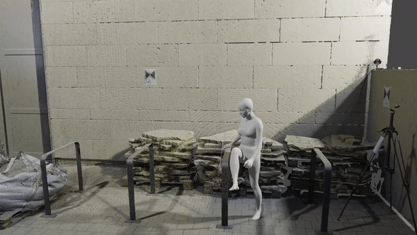
C.-H. P. Huang, H. Yi, M. Höschle, M. Safroshkin, T. Alexiadis, S. Polikovsky, D. Scharstein, M. J. Black
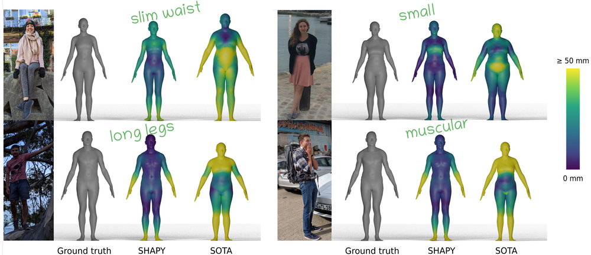
V. Choutas, L. Müller, C.-H. P. Huang, S. Tang, D. Tzionas, M. J. Black
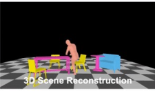
H. Yi, C.-H. P. Huang, D. Tzionas, M. Kocabas, M. Hassan, S. Tang, J. Thies, M. J. Black
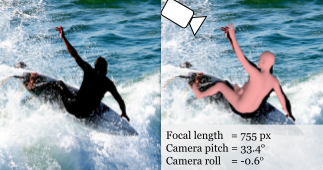
M. Kocabas, C.-H. P. Huang, J. Tesch, L. Müller, O. Hilliges, M. J. Black
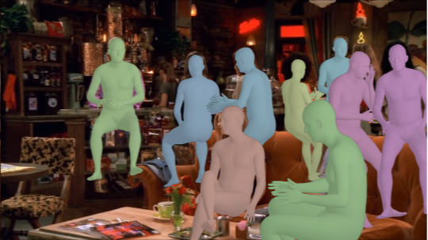
M. Kocabas, C.-H. P. Huang, O. Hilliges, M. J. Black
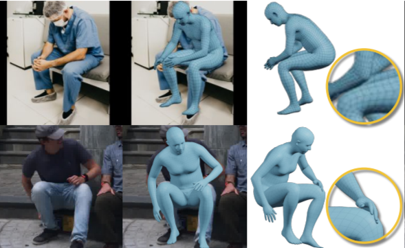
L. Müller, A. A. A. Osman, S. Tang, C.-H. P. Huang, M. J. Black
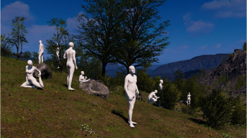
P. Patel, C.-H. P. Huang, J. Tesch, D. T. Hoffmann, S. Tripathi, M. J. Black
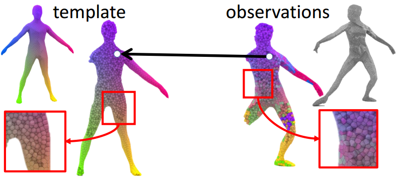
C.-H. P. Huang, B. Allain, E. Boyer, J.-S. Franco, F. Tombari, N. Navab, S. Ilic
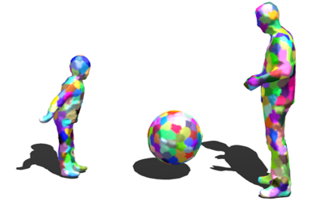
C.-H. P. Huang*, C. Cagniart*, E. Boyer, S. Ilic
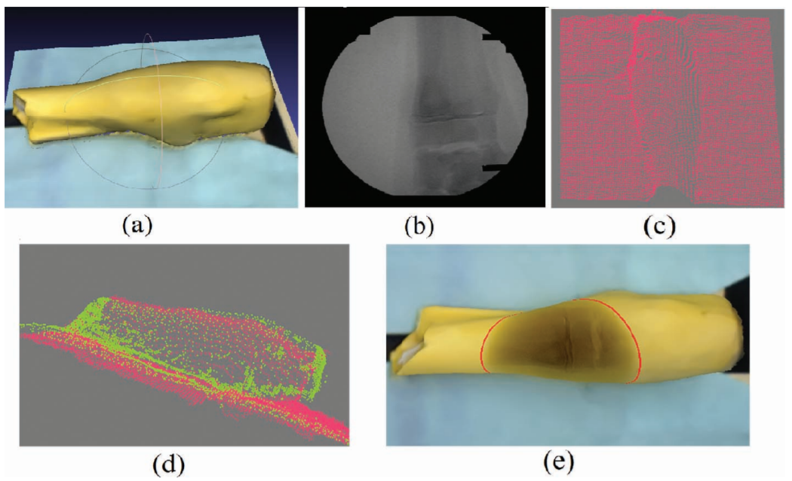
X. Wang, S. Habert, M. Meng, C.-H. P. Huang, P. Fallavollita, N. Navab
C.-H. P. Huang*, B. Allain*, J.-S. Franco, N. Navab, S. Ilic, E. Boyer
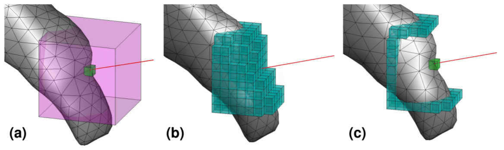
C.-H. P. Huang, F. Tombari, N. Navab
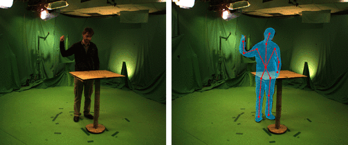
C.-H. P. Huang, E. Boyer, B. do Canto Angonese, N. Navab, S. Ilic
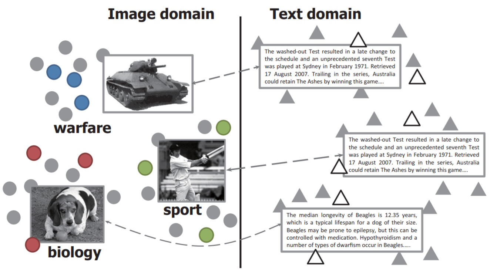
Y. R. Yeh, C.-H. P. Huang, Y. C. Wang
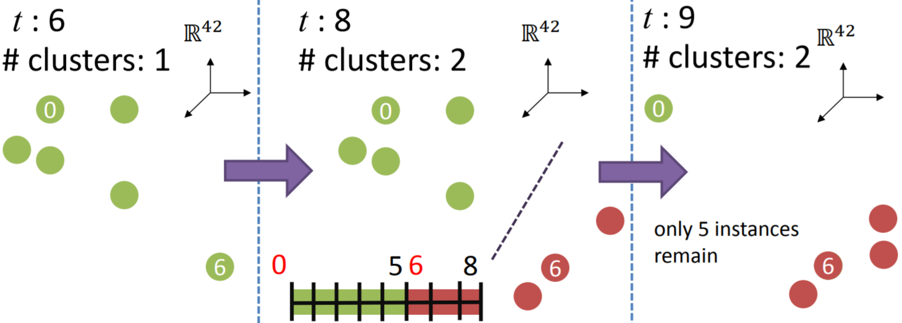
C.-H. P. Huang, E. Boyer, N. Navab, S. Ilic
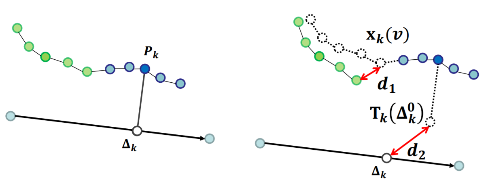
C.-H. P. Huang, E. Boyer, S. Ilic
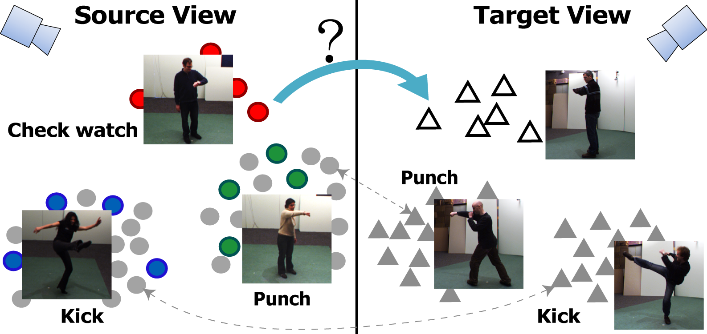
C.-H. P. Huang, Y. R. Yeh, Y. C. Wang
H. M. Wang, C.-H. P. Huang, J. F. Yang